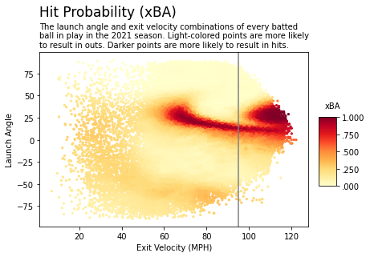
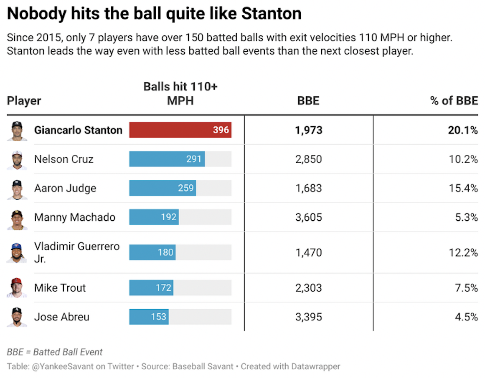

Sports
Why hitting the ball hard is valued more than ever before.
September 1, 2022
Pittsburgh Pirates' top prospect Oneil Cruz recorded the hardest-hit ball in Statcast history this past week. The 6’7 shortstop lined a 122.4 mph single off the right field wall in a game against the Atlanta Braves.
Shockingly, Cruz’s missile didn’t clear the fence.
The ball ricocheted off the wall before Cruz could even make it halfway down the line. Baseball fans marveled at the rookie’s impressive feat. Since 2015, when Statcast began tracking batted ball data, only 16 balls have ever been hit with exit velocities greater than 120 mph.
Not even a week later, Cruz showed off his power again:
Oneil Cruz has 3 batted balls with an exit velocity over 110mph tonight.
— FOX Sports: MLB (@MLBONFOX) August 30, 2022
It's the 5th inning. pic.twitter.com/26TDx5BM8q
However, some exit velocity naysayers dismissed Cruz’s power and pointed to his low batting average and struggles at the plate this season. Through 52 games, Cruz is slashing .199/.249/.398 with a 76 wRC+. Yes, he has struggled so far, but his ability to hit the ball hard shows great potential.
What some fans fail to realize is that exit velocity correlates very closely with success.
Obviously, there will be instances where a ball is cued up perfectly, but hit right at a defender resulting in an out. There will also be times when soft-contact “bloopers” fall for hits.
In most cases, hitting the ball harder gives you a better chance of recording a hit.
Expected batting average (xBA) measures the likelihood that a batted ball will become a hit. Each batted ball is assigned an xBA based on how often comparable balls with the same launch angle and exit velocity have fallen for hits in the Statcast era.
Everything to the right of the grey line is considered “hard-hit” according to Statcast (95+ MPH). The cluster of red to the left are soft-contact line drives that just make it over the infield. The cluster of red all the way to the right represents home runs.
So, getting a hit requires the right combination of launch angle, exit velocity and batted ball direction of course. But it is apparent that hitting the ball hard significantly increases your chance of recording a hit. Since 2015, hard-hit balls have an xBA of .518, meaning they fall for hits more than 50% of the time.
According to MLB.com, expected batting average is more indicative of a player's skill than regular batting average, as xBA removes defense from the equation. Hitters are able to influence exit velocity and launch angle but have no control over what happens to a batted ball once it is put into play.
Being able to consistently crush the ball is definitely a skill MLB teams want from their players.
Before Cruz’s blistering line drive, Giancarlo Stanton had the record for the hardest-hit ball of all time, a 122.2 mph single in 2017. When it comes to hitting the ball hard, no one stands out quite like Stanton.
There are a few sluggers with comparable Statcast metrics. In fact, his own teammate, Aaron Judge, has a higher hard-hit percentages (HH%) and average exit velocity over the past 8 years. What separates Stanton from the rest is his consistency to demolish baseballs.
Since 2015, Stanton has owned the hardest-hit ball in every season. He is also responsible for 20 of the 25 hardest-hit balls of all time. Going further, he occupies 37 of the top 50 spots. Plenty of players can hit the ball hard (95+ mph), but very few can consistently crack the 110 mph mark.
Over 20% of Stanton’s batted balls have left his bat at 110 MPH or greater. Even with almost 1,000 less batted balls than Nelson Cruz, Stanton has more than 100 balls hit 110+ MPH. In terms of percentage, Judge is the next closest player with 15.4%.
Increasing exit velocity incrementally, the gap between Stanton and the next closest player gets even wider. At 111+ MPH, Stanton has 139 more batted balls than the player with the 2nd most. At 112+ MPH, the difference grows to 141.
Stanton has definitely reaped the benefits of being able to consistently crush the ball. He won the NL MVP award in 2017, mashing 59 home runs with a .631 slugging percentage and an OPS over 1.000. He has the 8th most home runs in MLB since 2015 despite missing a substantial amount of time in 2019 and 2020.
Moral of the story: exit velocity matters. It’s something that should be lauded instead of ridiculed. Cruz smoking a ball 122.4 MPH shouldn’t be dismissed because he’s struggled in his first 50 games. His batted ball profile shows great promise and potential.
It’s the same reason why the New York Yankees drafted Vanderbilt outfielder Spencer Jones with the 25th overall pick this year. The 6’7 lefty has already drawn comparisons to Aaron Judge for his stature and ability to demolish baseballs.
Jones impressed scouts at the combine when he posted an average exit velocity of 103.6 MPH on 10 swings and the hardest-hit ball of the day at 112.2 MPH. He also holds the record for hardest-hit ball in college history with a 119.1 MPH line drive single.
Whether you like it or not, exit velocity matters to MLB teams. Hitting the ball hard increases the likelihood of getting hits and producing runs for your team. Batted ball data has only been around since 2015 and it isn’t going away anytime soon.